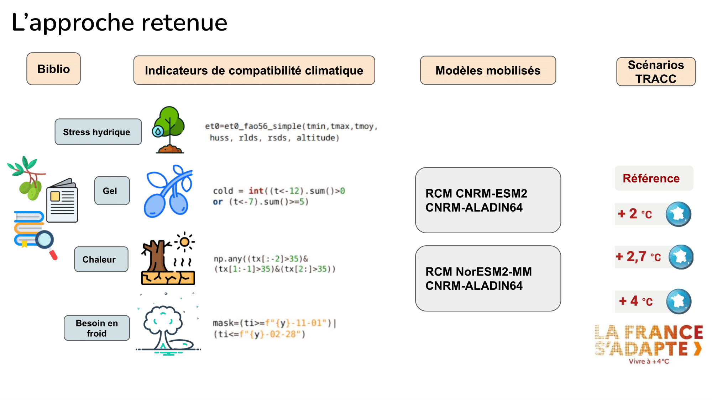
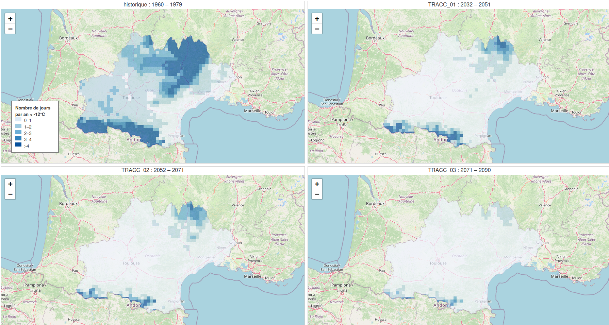
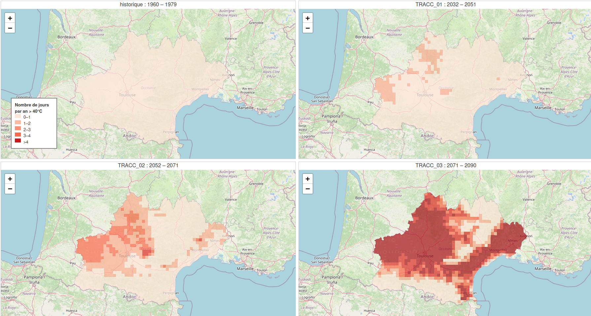

Biogeographical Compatibility of Olive Cultivation Under Future TRACC Climate Scenarios
This work was conducted during the Hackathon Climat en Données, where the project won a bronze medal among 32 submissions.
It addresses Challenge 2 and Challenge 8 – Agricultural Transition Issues, focusing on identifying regional biogeographical areas compatible with emerging crops, under future TRACC climate trajectories.
Our case study centers on the olive tree and its potential suitability in Occitanie, including the department of Gers (32).
Participants:
- Mathilde Hibon – GIP LIA: agronomy engineering, indicators, data visualization
- Aurélien Mure – CEREMA: data science
- Carole Perigois – programming & data
- Marion Houdayer – programming & data handling
- Guillaume Taburet – SOLAGRO: programming & advanced visualization
🔗 GitHub repository: https://github.com/GuillaumeTaburet/hackathon-defi2-agricole
🌐 Deployed platform: https://guillaumetaburet.github.io/hackathon-defi2-agricole/
Context and Motivation
As climate change accelerates, territorial actors need operational tools to explore adaptation pathways for agriculture. While climate impact platforms exist, dynamic, map-based visualizations at relevant territorial scales remain rare, particularly for evaluating the future suitability of emerging crops.
Our project tackles the question:
Are there biogeographical areas within Occitanie compatible with olive cultivation under the future TRACC climate scenarios (2°C, 2.7°C, 4°C)?
We created a workflow capable of:
- Computing climate-based abiotic stress indicators,
- Mapping their evolution across three TRACC horizons,
- Identifying compatible or incompatible zones,
- Highlighting the potential role of the Gers, traditionally too cold for olive trees.
Overview
The study uses:
- Two RCMs at 8 km resolution,
- Forced by two GCMs,
- Producing maps for each indicator and each TRACC scenario,
- Over 20-year climate windows:
- +2°C
- +2.7°C
- +4°C
Indicators were selected from the literature on olive phenology and agronomic constraints, focusing on thresholds affecting survival and productivity.
Scientific Approach
Selected Indicators
1. Minimum temperatures (winter frost risk)
- Tmin < –12°C, or
- ≥ 5 occurrences of Tmin < –7°C in winter.
A single extreme event may kill the tree.
2. Maximum temperatures (extreme heat stress)
- Tmax > 40°C, or
- Tmax > 35°C for 3 consecutive days (April–June).
This corresponds to physiological breakdown.
3. Hydric deficit (JJA water stress)
Daily hydric deficit is:
\[\text{Deficit}(t) = \max(0,\ ET_0(t) - P(t))\]Cumulative deficit over a season:
\[\text{Deficit}_{\text{cumul}} = \sum_{t \in \text{duration}} \text{Deficit}(t)\]4. Chilling requirement
Number of years where:
\[\frac{T_{\min} + T_{\max}}{2} \le 12^\circ\mathrm{C}\]for fewer than 70 days between November and February.

Key Findings
1. Intense Frost Risk (Tmin < –12°C)
- Historically (1960–1979), the Gers experienced 1–3 frost days < –12°C, prohibiting olive cultivation.
- Under TRACC +4°C (2071–2090):
- Most of Occitanie (except mountains) shows 0–1 frost days,
- Making the region largely frost-compatible.

2. Extreme Heat Risk (Tmax > 40°C)
- Historically absent.
- Under TRACC scenarios:
- +2°C: 1–2 days >40°C in Eastern Gers
- +2.7°C: 2–3 days
- +4°C: 5 days in Gers; 5–12 days on the Mediterranean coast
This makes the Gers climatically unsuitable, despite improved frost resistance.

Limitations and Future Improvements
- Only frost and heat indicators fully computed.
- Hydric deficit and chilling requirement still needed.
- Phenological sensitivity requires finer temporal resolution.
- A multi-criteria suitability index is needed.
- Visualization could be enhanced through interactive map grids and scenario sliders.
References
- Orlandi, F., Garcia-Mozo, H., Dhiab, A.B. et al. Climatic indices in the interpretation of the phenological phases of the olive, Climatic Change 116, 263–284 (2013).
- International Olive Council: World Olive Catalogue – High Temperature Module.
- Allen et al. (FAO-56), Irrigation and Drainage Paper 56.